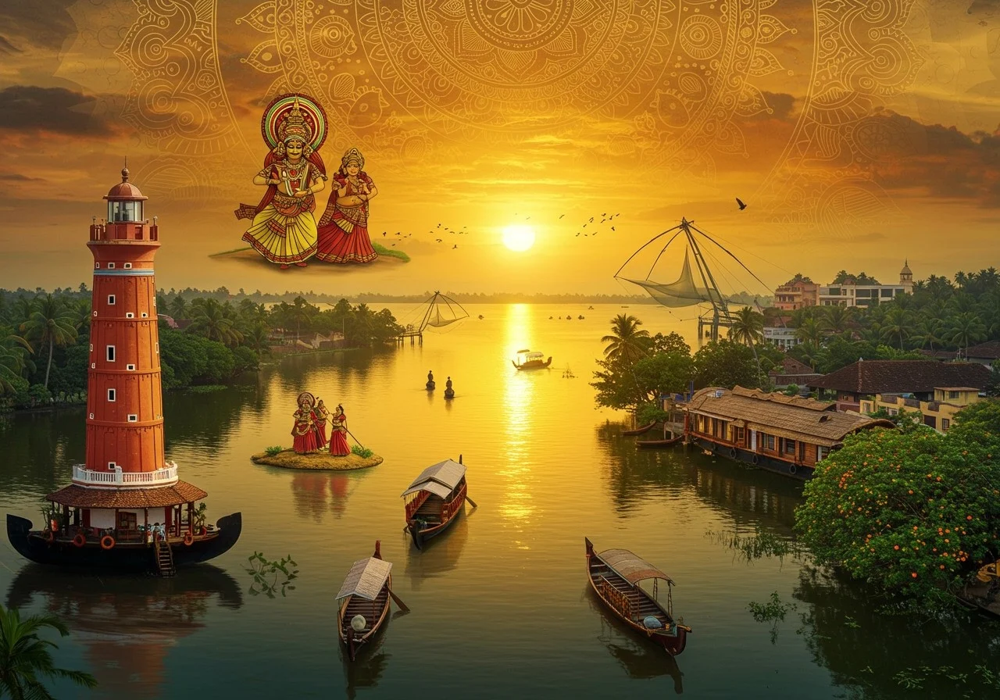

Where Culture, Trade, and Nature Converge
Gently nestled on the golden crescent of Kerala's shore, Kollam is more than a district — it is a living verse, penned by the sea breeze, spoken by coconut trees, and sung by the rivers that weave through its green lands. Old and wise, Kollam bears the fragrance of the Arabian Sea and the beat of backwaters in its breath, keeping the secrets of centuries of history, commerce, and tradition in its earth.
Long before maps carried names, Kollam was a door to the world — Quilon to ancient travelers, and Desinganadu to its indigenous poets. It was one of India's busiest seaports, spoken of in Marco Polo's journeys and visited by Phoenicians, Chinese, Arabs, and Romans alike. Spices, sandalwood, and tales came rolling in from its shores like waves crashing into the tide.
Founded in 825 AD, the Kollam Era (Malayalam calendar) starts here — a reminder of the area's importance. It flourished under the Cheras, came into the possession of Venad kings, and eventually fell under the sway of Travancore. The aroma of Portuguese desire and Dutch footprints still lingers in its sea breezes, and colonial churches and trading houses punctuate its towns like abandoned lines.
Kollam's charm is not in the boisterous but in the melodic — it is a country of reflected waters, rippling paddy fields, and temples with stories inscribed upon her walls.
Ashtamudi Lake, Kerala's second largest, stretches out her eight arms like a queen luxuriating in splendor. Her waters caress the earth and enfold houseboats like lullabies in motion.
Munroe Island, where time itself glides easily in canoes, is a collection of islets where coconut groves are separated by thin canals and share whispers known only to the locals.
Thenmala, India's first developed eco-tourism destination, is the song of the forest — with waterfalls, meandering pathways, and a musical fountain where nature sings her own symphony.
The Thangassery Light House, towering over colonial devastation, stands sentinel like a guardian of time, its eyes reaching far out to sea — watching, remembering.
Punalur, with its ancient suspension bridge built in 1877, is not merely a bridge over water but over centuries, bearing the burden of British engineering, Kerala's fortitude.
Kollam celebrates culture not in grand spectacles but in everyday rhythms — the art of Kathakali, the music of temple festivals, and the silent prayers whispered into coconut groves.
Temples, churches, and mosques rise side by side, not in competition but in companionship. The Oachira Parabrahma Temple, unique without idols or sanctum, celebrates universal consciousness. The St. Thomas Fort Church in Thangassery and ancient mosques of Chinnakada speak of a land where faiths have always coexisted, in prayer and peace.
Though modern roads cross her ancient paths, Kollam remains serene — a retreat for those who seek not just a destination, but a story. Her sunsets are not hurried, her mornings rise gently from the mist, and her people move with the rhythm of the tides.
Kollam is not a place to merely see — it is a place to feel.
To visit Kollam is to walk into a living tale — where the past is painted in golden hues, the present flows with soulful grace, and every corner sings a verse of the land’s eternal poetry.
Today, Kollam blends this heritage with natural beauty: from the Ashtamudi backwaters to the Palaruvi waterfalls. Understanding Kollam’s past enriches every moment spent exploring it today.